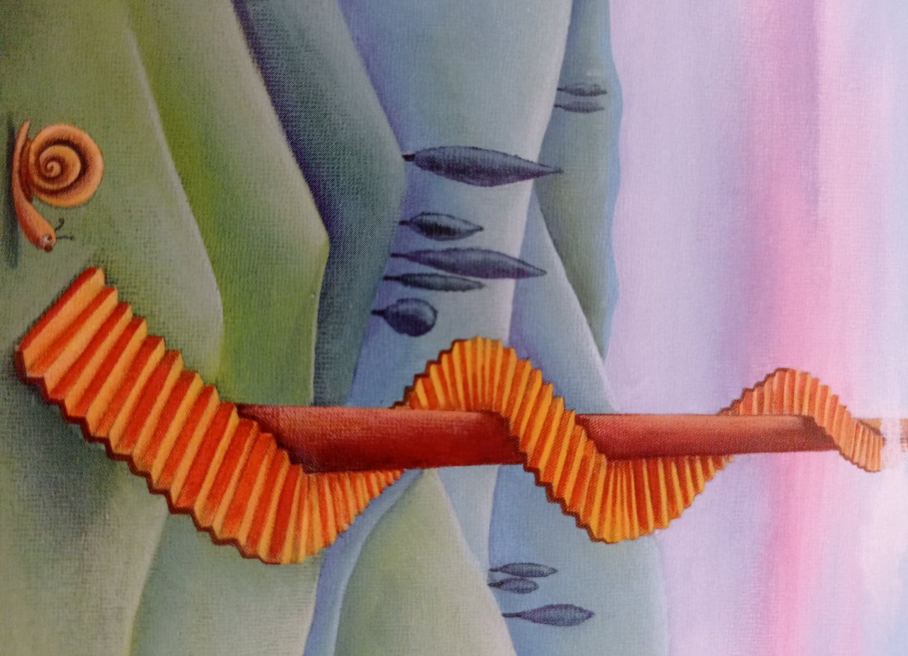

Jelenlegi legfőbb célom az, hogy elvégezzem az egyetemet, ami nagyon nehéznek és hosszadalmasnak tűnik, főleg mert minél hamarabb önálló szeretnék lenni, de ahhoz, hogy azon a szakterületen dolgozhassak a jövőben, amit már két és fél éve tervezgetek, nem adhatom fel kapásból az első félévemben.
Szeretnék nagyon sokáig élni, hogy majd idős koromban faluhelyre költözhessek, ahol paradicsomot termesztek (csak mert szeretem), rózsákat nevelgetek, amik között a finom illatban hintaágyban heverészve fogom a könyvtárakat is megtöltő mennyiségű könyveimet olvasgatni, de azért néha szünetet is fogok tartani, hogy teázgassak.